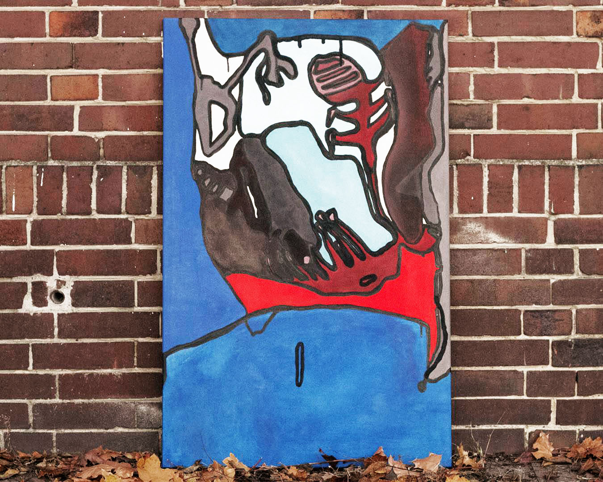
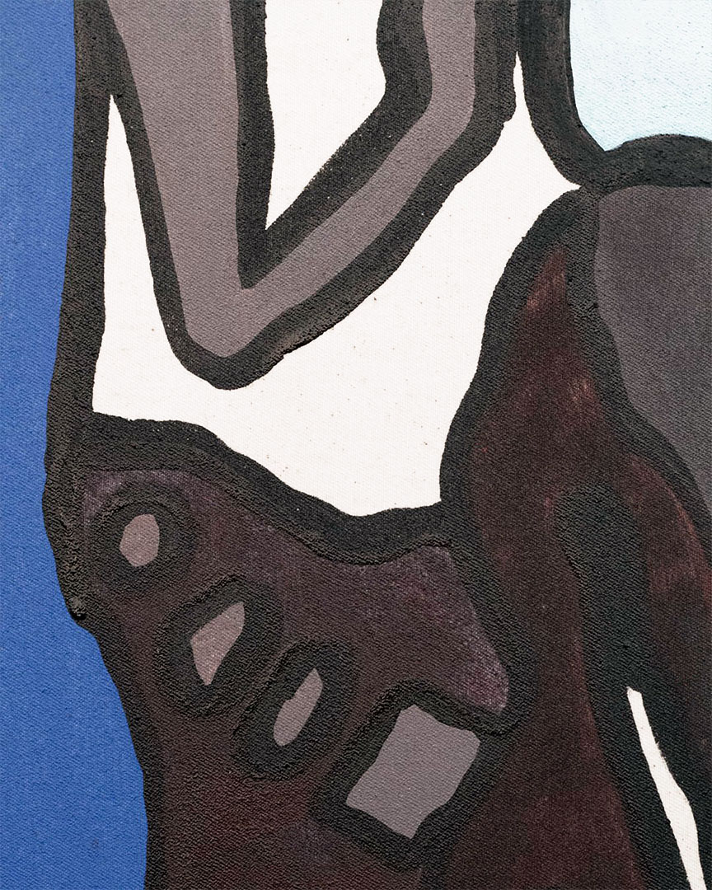
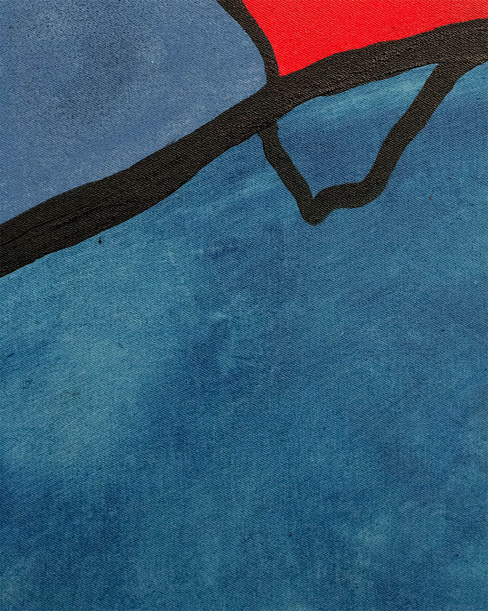

The Form Of The Techno



View From The Cave, 2020, acrylic on canvas, 70 x 110 cm

 The Pull Of The Chaos
The Pull Of The Chaos, 2020, acrylic on canvas, 70 x 110 cm
These paintings form a series called The Form Of The Techno. The project starts at the beginning of the first lockdown. It is focused on current trends in contemporary art - the sort of art that is «out of context», taking codes of perfections, obligations, orders and digital models. To make art and be accepted in the game, is it deadly?
The Form Of The Techno is massive, aggressive and violent with contrasts between colors. Written with techno in mind, it shows the importance of the auditory experience because of its repercussions on the painted gestures. It is a kind of real-time auditory experimentation by which design, colors and movements adapt to and are changed by sounds.
 I Don't Know If It Is The Virus The Problem
I Don't Know If It Is The Virus The Problem, 2020, acrylic on canvas, 70 x 110 cm
It is a reflection based on this new society of the order, where the individual is no longer master of himself of what he want to do, but intimately subject to the performance of «to be pretty and sexy».
 Melting
Melting, 2020, acrylic on canvas, 90 x 150 cm
After a few years dealing with the institutional conventions of contemporary art and their contradictions, Charlene felt the need to break away from them, to create a new language that expresses itself freely, that is more natural, deep and real.
The Form Of The Techno outlines a new society using music as a instrument.
It depicts scenes from digital heritage in a metaphoric way, mixing cerebral landscapes, organic forms, dirty textures, sensual colored patterns with black and dripping outlines. Resembling body infections, 3D sculptures, atoms or anatomical limbs. This project is a metaphor and a personal regard on this society, like a truthful expression of the artists’ feelings and an allegory of progressive art.